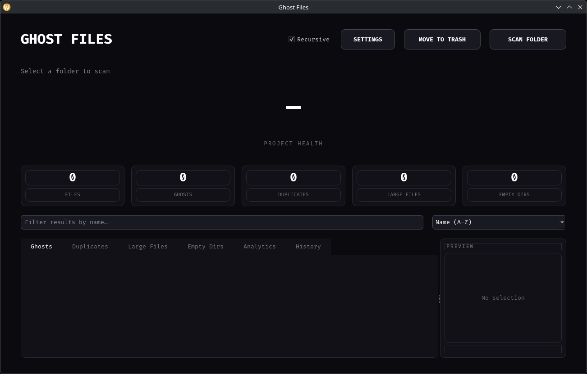

Ghost Detection
Finds empty, temporary, backup, old, swap, and suspicious files.
A lightweight cross-platform desktop utility for finding unnecessary, duplicate, temporary, and large files without permanently deleting them.
Ghost Files scans a selected folder and identifies files that may be wasting storage or may no longer be useful. It combines file analysis, duplicate verification, and storage checks into a simple desktop interface.
Instead of permanently deleting files, Ghost Files moves selected files to the operating system's Trash or Recycle Bin, providing a safer cleanup workflow.
Finds empty, temporary, backup, old, swap, and suspicious files.
Uses file-size grouping and SHA-256 hashing to verify duplicate files.
Identifies files that exceed the configured storage threshold.
Moves selected files to Trash or Recycle Bin instead of deleting them permanently.
Provides a quick overview of the selected folder's cleanup state.
Refreshes the results after cleanup so the interface stays accurate.

Ghost Files v1.1.0 is the latest public release and includes packaged builds for both Linux and Windows.